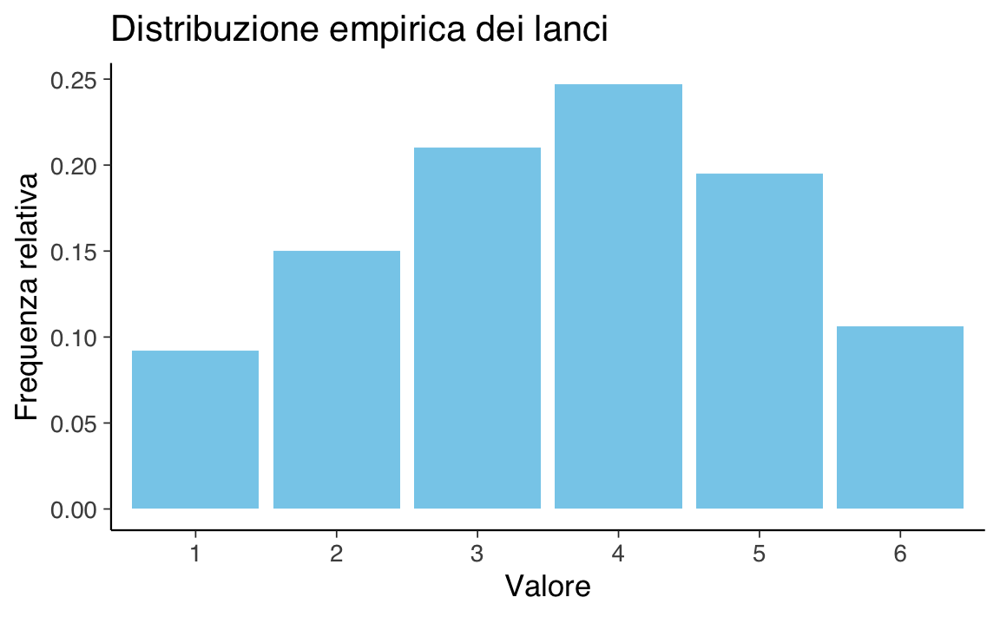
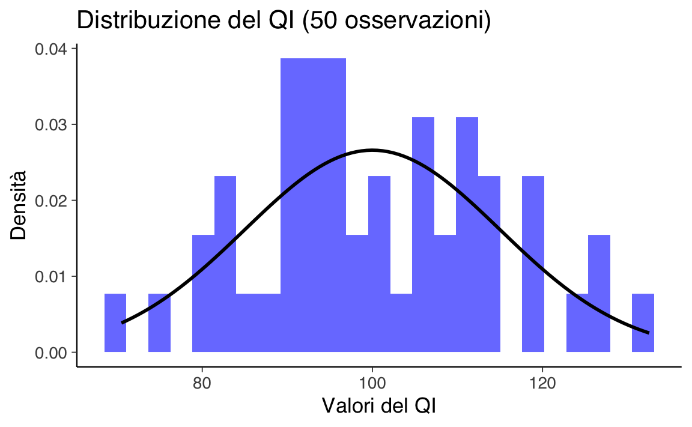
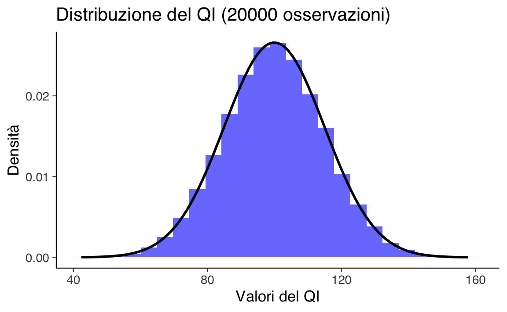

35 Distribuzioni di massa e di densità
- Distinguere la variabilità di variabili discrete e continue, comprendendone le implicazioni.
- Differenziare tra massa di probabilità (distribuzioni discrete) e densità di probabilità (distribuzioni continue).
- Comprendere perché, per una variabile continua, la probabilità di osservare un valore esatto è pari a zero.
- Passare dall’uso degli istogrammi alle funzioni di densità di probabilità come rappresentazioni delle distribuzioni continue.
- Utilizzare la funzione di ripartizione per calcolare le probabilità cumulative.
- Leggere il capitolo Random variables and their distributions del testo di Blitzstein & Hwang (2019).
35.1 Introduzione
La data science mira a comprendere e prevedere fenomeni, compresi quelli futuri, mediante l’impiego di modelli probabilistici e dati empirici. Tale capacità predittiva si fonda sulla conoscenza approfondita della popolazione di riferimento, senza la necessità di esaminare ogni singolo risultato possibile. In statistica, questa conoscenza viene formalizzata attraverso le distribuzioni di probabilità, uno strumento essenziale per analizzare e modellare i dati.
Una distribuzione di probabilità, indicata formalmente come \(p(x)\), è associata a una variabile casuale \(X\) e descrive la variabilità osservabile in una popolazione. Essa fornisce un modello teorico per quantificare la probabilità di osservare ciascun valore possibile di \(X\), permettendo di caratterizzare l’incertezza legata al fenomeno in analisi.
Ad esempio, se si seleziona casualmente un’osservazione dalla popolazione, la distribuzione \(p(x)\) indica la probabilità che la variabile casuale \(X\) assuma un determinato valore. In tal modo, la distribuzione riassume matematicamente le informazioni sulle frequenze o probabilità associate ai possibili esiti, offrendo un quadro generalizzabile del fenomeno studiato.
Tuttavia, è fondamentale sottolineare che \(p(x)\) non rappresenta la popolazione reale nella sua interezza, ma costituisce un modello statistico, ovvero una rappresentazione semplificata della realtà. Questo modello consente di generalizzare le osservazioni disponibili e di formulare previsioni su eventi futuri con un approccio rigoroso. La distribuzione di probabilità non mira a catturare ogni dettaglio, ma piuttosto a fornire una descrizione essenziale e funzionale del fenomeno.
35.2 Variabili Casuali Discrete e Continue
Un elemento fondamentale nella comprensione delle distribuzioni di probabilità è la distinzione tra variabili casuali discrete e continue, poiché le distribuzioni associate differiscono significativamente.
35.2.1 Distribuzioni di Massa di Probabilità (Discrete)
Le distribuzioni di probabilità discrete descrivono fenomeni aleatori che generano un numero finito o numerabile di esiti possibili. Queste distribuzioni sono particolarmente utili per modellare eventi che si verificano in contesti discreti, come il numero di successi in un esperimento o la selezione casuale da un insieme di opzioni finite.
In una distribuzione di massa di probabilità, a ciascun valore di una variabile casuale discreta \(X\) è associata una probabilità ben definita. Ad esempio, consideriamo un dado sbilanciato con la seguente distribuzione di probabilità:
| Valore di \(X\) | Probabilità \(p(x)\) |
|---|---|
| 1 | 0.10 |
| 2 | 0.15 |
| 3 | 0.20 |
| 4 | 0.25 |
| 5 | 0.20 |
| 6 | 0.10 |
Possiamo rappresentare questa distribuzione empiricamente generando 1000 lanci del dado e creando un diagramma a barre, in cui l’altezza di ciascuna barra rappresenta la frequenza relativa osservata. In R:
# Dati
set.seed(123)
prob <- c(0.10, 0.15, 0.20, 0.25, 0.20, 0.10)
lanci <- sample(1:6, size = 1000, replace = TRUE, prob = prob)
# Creazione di un data frame
df <- data.frame(Valore = factor(lanci))
# Creazione del diagramma a barre
ggplot(df, aes(x = Valore)) +
geom_bar(aes(y = after_stat(count) / sum(after_stat(count))), fill = "skyblue") +
labs(
title = "Distribuzione empirica dei lanci",
x = "Valore",
y = "Frequenza relativa"
)
Con un numero infinito di osservazioni, la distribuzione empirica si avvicinerebbe alla distribuzione di massa di probabilità teorica.
35.3 Distribuzioni di Densità di Probabilità (Continue)
Le densità di probabilità descrivono variabili casuali continue, cioè variabili che possono assumere un numero infinito di valori all’interno di un intervallo. A differenza delle distribuzioni discrete, dove una funzione di massa di probabilità fornisce la probabilità esatta di ogni valore discreto, una densità di probabilità \(f(x)\) rappresenta la probabilità che la variabile casuale assuma valori in un dato intervallo. La probabilità per un intervallo \([a, b]\) è data dall’area sotto la curva di densità tra \(a\) e \(b\):
\[ P(a \leq X \leq b) = \int_a^b f(x) \, dx. \]
35.3.1 Esempio pratico: quoziente intellettivo (QI)
Consideriamo una variabile casuale che rappresenta il quoziente intellettivo (QI) in una popolazione. I valori di QI sono tipicamente distribuiti secondo una distribuzione normale, con una media di \(100\) e una deviazione standard di \(15\). Possiamo approssimare la densità teorica attraverso un istogramma dei dati simulati.
35.4 Dagli istogrammi alle densità
Un istogramma divide i dati in intervalli (o “classi”) di ampiezza \(\Delta\) e rappresenta graficamente le frequenze relative dei valori in ciascun intervallo. L’area di ogni barra è proporzionale alla frequenza relativa, mentre la sua altezza è proporzionale alla densità relativa. Con un numero crescente di osservazioni \(M\) e una larghezza degli intervalli \(\Delta \to 0\), il profilo dell’istogramma tende a una curva continua, detta funzione di densità di probabilità \(f(x)\).
Ad esempio, nella statistica descrittiva, abbiamo già incontrato rappresentazioni simili alla densità di probabilità, come il kernel density plot (KDE). Questo metodo non parametrico stima la funzione di densità a partire dai dati osservati.
35.4.1 Simulazione: distribuzione del QI
35.4.1.1 Caso 1: campione piccolo
Iniziamo simulando un campione di 50 individui. Creiamo un istogramma e lo confrontiamo con la densità teorica stimata.
# Parametri della distribuzione normale
mu <- 100
sigma <- 15
size <- 50
# Generare i dati
set.seed(123)
x <- rnorm(size, mean = mu, sd = sigma)
# Istogramma e densità
data_frame <- data.frame(X = x)
xmin <- min(x)
xmax <- max(x)
density_data <- data.frame(
X = seq(xmin, xmax, length.out = 100),
Density = dnorm(seq(xmin, xmax, length.out = 100), mean = mu, sd = sigma)
)
ggplot(data_frame, aes(x = X)) +
geom_histogram(
aes(y = after_stat(density)), # Uso di after_stat() al posto di ..density..
bins = 25,
fill = "blue",
alpha = 0.6
) +
geom_line(
data = density_data,
aes(x = X, y = Density),
color = "black",
size = 1
) +
labs(
title = "Distribuzione del QI (50 osservazioni)",
x = "Valori del QI",
y = "Densità"
)
#> Warning: Using `size` aesthetic for lines was deprecated in ggplot2 3.4.0.
#> ℹ Please use `linewidth` instead.
Con un campione di piccole dimensioni, l’istogramma non corrisponde perfettamente alla densità teorica. L’approssimazione migliora aumentando il numero di osservazioni.
35.4.1.2 Caso 2: campione grande
Ripetiamo la simulazione con 20.000 individui per osservare una maggiore corrispondenza tra istogramma e densità teorica.
# Generare un campione più grande
size <- 20000
set.seed(123)
x <- rnorm(size, mean = mu, sd = sigma)
# Aggiornare media e deviazione standard
mu <- mean(x)
sigma <- sd(x)
# Creare il grafico
data_frame <- data.frame(X = x)
xmin <- min(x)
xmax <- max(x)
density_data <- data.frame(
X = seq(xmin, xmax, length.out = 100),
Density = dnorm(seq(xmin, xmax, length.out = 100), mean = mu, sd = sigma)
)
ggplot(data_frame, aes(x = X)) +
geom_histogram(
aes(y = after_stat(density)), # Uso di after_stat() al posto di ..density..
bins = 25,
fill = "blue",
alpha = 0.6
) +
geom_line(
data = density_data,
aes(x = X, y = Density),
color = "black",
size = 1
) +
labs(
title = sprintf("Distribuzione del QI (%d osservazioni)", size),
x = "Valori del QI",
y = "Densità"
)
Con un campione di grandi dimensioni, l’istogramma riflette molto meglio la densità teorica. La funzione di densità rappresenta quindi un’astrazione continua dell’istogramma.
35.4.2 Interpretazione della funzione di densità
La funzione di densità è una curva che approssima il profilo di un istogramma quando:
- Il numero di osservazioni tende a infinito: le frequenze relative si avvicinano alle probabilità teoriche.
- Gli intervalli sono infinitamente piccoli: il profilo dell’istogramma diventa continuo.
In un istogramma, l’area di ciascuna barra rappresenta la probabilità stimata che la variabile casuale assuma un valore compreso in quell’intervallo. Analogamente, nella densità di probabilità, l’area sotto la curva per un intervallo \([a, b]\) rappresenta la probabilità di osservare un valore in quell’intervallo.
In conclusione, la funzione di densità di probabilità è uno strumento fondamentale per modellare fenomeni reali. Consente di passare da una rappresentazione discreta (istogramma) a una continua, rendendo possibile l’analisi di variabili casuali continue con maggiore precisione e flessibilità.
35.5 Parametri
Le distribuzioni di probabilità, siano esse discrete o continue, sono definite da uno o più parametri, che ne determinano le proprietà fondamentali e permettono di modellare in modo preciso fenomeni reali. I parametri rappresentano valori numerici che influenzano il comportamento della distribuzione, come la posizione, la dispersione, la forma e altre caratteristiche specifiche.
I parametri delle distribuzioni sono utilizzati per descrivere proprietà essenziali della variabile casuale, consentendo di adattare il modello probabilistico al fenomeno in analisi. Ecco alcune delle proprietà principali influenzate dai parametri:
- Posizione (o tendenza centrale): Indica il valore attorno al quale si concentra la distribuzione. Ad esempio, nella distribuzione normale, la media (\(\mu\)) rappresenta il centro della distribuzione.
- Dispersione: Misura quanto i valori della distribuzione si allontanano dalla posizione centrale. Ad esempio, nella distribuzione normale, la deviazione standard (\(\sigma\)) controlla la larghezza della curva.
- Forma: Determina l’asimmetria o la curtosi della distribuzione. Alcune distribuzioni, come quella gamma o beta, hanno parametri specifici per regolare la forma.
- Probabilità specifiche: Nelle distribuzioni discrete, i parametri possono determinare la probabilità di specifici eventi. Ad esempio, nella distribuzione binomiale, il parametro \(p\) rappresenta la probabilità di successo in ciascun tentativo.
La capacità di manipolare i parametri consente di adattare la distribuzione a diversi contesti e di catturare meglio le caratteristiche dei dati reali. Nella pratica, stimare accuratamente i parametri di una distribuzione è essenziale per comprendere e modellare i fenomeni studiati, nonché per formulare previsioni affidabili. Questi parametri sono spesso stimati a partire dai dati osservati mediante metodi statistici come la massima verosimiglianza o i metodi bayesiani.
35.6 Il Paradosso delle Variabili Casuali Continue
Consideriamo la probabilità che una variabile casuale continua assuma un valore specifico, come ad esempio un QI esattamente uguale a 100. Intuitivamente, potremmo pensare che sia possibile calcolare questa probabilità. Tuttavia, sorprendentemente, la risposta è:
\[ P(X = 100) = 0. \]
Questo risultato deriva dal fatto che, per una variabile casuale continua, la probabilità di un singolo valore è sempre pari a zero. Se così non fosse, ogni possibile valore all’interno del dominio della variabile dovrebbe avere una probabilità positiva. Ma se sommiamo tutte queste probabilità, il totale sarebbe maggiore di uno, il che è impossibile, dato che la somma delle probabilità per una variabile casuale deve essere esattamente uno.
35.6.1 L’Interpretazione delle Probabilità per Variabili Continue
Nel caso delle variabili casuali continue, rinunciamo al concetto di probabilità associata a un singolo valore. Invece, consideriamo la probabilità di osservare un valore all’interno di un intervallo. Ad esempio, la probabilità che il QI sia compreso tra 95 e 105 si calcola come:
\[ P(95 \leq X \leq 105) = \int_{95}^{105} f(x) \, dx, \]
dove \(f(x)\) è la funzione di densità di probabilità (PDF). La probabilità per un valore esatto, come \(P(X = 100)\), corrisponde all’area sotto la curva di densità in un singolo punto, che è sempre zero.
Questa caratteristica introduce due conseguenze fondamentali:
- Le probabilità si calcolano solo per intervalli di valori, non per punti specifici.
- Eventi con probabilità zero non sono impossibili: il fatto che un evento abbia probabilità zero non implica che non possa verificarsi.
35.6.2 Il Paradosso della Probabilità Zero
Da questa concezione emerge un apparente paradosso: se la probabilità che il QI sia esattamente 100 è zero, come possiamo osservare un valore specifico nella realtà? Questo problema ci conduce a due domande cruciali:
- È possibile confrontare le “possibilità” di eventi diversi che hanno tutti probabilità zero?
- Come può l’unione di infiniti eventi con probabilità zero (ogni valore specifico in un intervallo) risultare in un evento con probabilità certa (qualsiasi valore nell’intervallo)?
35.6.3 Un’Analogia: Il Paradosso di Zenone
Questo paradosso richiama il celebre paradosso di Zenone sulla freccia: se in ogni istante la freccia è ferma, come può essa muoversi? In entrambi i casi, affrontiamo un’apparente contraddizione: come può la somma di infiniti “nulla” (probabilità zero o stati di immobilità) dare origine a “qualcosa” (probabilità certa o movimento)?
La soluzione risiede nella teoria dell’integrazione. La somma degli infiniti contributi infinitesimali di probabilità lungo un intervallo non è “nulla”, ma costituisce l’area totale sotto la curva di densità, che rappresenta una probabilità positiva.
35.6.4 La Prospettiva degli Infinitesimi
Negli anni ’60, il matematico Abraham Robinson introdusse una teoria rigorosa degli infinitesimi, numeri infinitamente piccoli ma non nulli. Applicando questa idea alle variabili casuali continue, possiamo reinterpretare il concetto di probabilità zero:
- La probabilità di un singolo valore non è realmente zero, ma infinitesimale.
- L’unione di infiniti eventi con probabilità infinitesimale risulta in una probabilità finita e positiva, come accade per un intervallo.
Questa prospettiva consente di confrontare eventi che la teoria classica assegna a probabilità zero, distinguendoli in base alla loro “grandezza infinitesimale”.
In conclusione, il “paradosso della probabilità zero” non è un vero paradosso, ma piuttosto un limite delle nostre intuizioni quando affrontiamo concetti continui. La teoria moderna degli infinitesimi e l’analisi matematica ci forniscono strumenti potenti per risolvere queste apparenti contraddizioni. Comprendendo che la probabilità è distribuita in modo continuo lungo un intervallo, possiamo superare la difficoltà concettuale di assegnare probabilità a eventi infinitamente piccoli, pur mantenendo coerenza con i principi fondamentali della teoria della probabilità.
35.7 La funzione di ripartizione per una variabile casuale continua
Per le variabili casuali continue, la funzione di ripartizione (ovvero, la distribuzione cumulativa) è definita esattamente come nel caso delle variabili casuali discrete:
\[ F_{\Theta}(\theta) = P(\Theta \leq \theta). \]
Cioè, è la probabilità che la variabile casuale \(\Theta\) assuma un valore minore di o uguale a \(\theta\).
Come nel caso discreto, la funzione di ripartizione di una v.c. continua può essere utilizzata per calcolare la probabilità che la v.c. assuma valori in un certo intervallo.
35.8 Interpretazioni Bayesiana e Frequentista della Funzione di Densità di Probabilità (PDF)
In questo capitolo, abbiamo introdotto la funzione di densità di probabilità come limite del profilo di un istogramma, una descrizione intuitiva e utile per comprendere il concetto di densità. Questa interpretazione corrisponde, tuttavia, alla visione frequentista della densità di probabilità. Nella statistica Bayesiana, l’interpretazione è diversa e merita una spiegazione separata.
Nell’approccio Bayesiano, un parametro è considerato una “variabile casuale” che segue una distribuzione di valori, anziché un valore fisso. La Figura 35.1, vedi 35.1 illustra le diverse interpretazioni di una PDF per una quantità reale \(x\). Queste interpretazioni valgono sia che \(x\) rappresenti un parametro incognito sia che si tratti di un dato osservato.
Nel pannello di sinistra, vediamo l’interpretazione frequentista di \(p(x)\): la PDF rappresenta una collezione ipotetica di ripetizioni di esperimenti, in cui \(x\) può assumere diversi valori. La PDF corrisponde quindi a un istogramma limite di questi valori, distribuiti secondo \(p(x)\).
Il pannello di destra, invece, raffigura l’interpretazione Bayesiana, in cui la PDF rappresenta l’incertezza sul valore di \(x\) per un singolo caso specifico. In questo caso, la probabilità si distribuisce lungo i possibili valori che \(x\) potrebbe assumere, visualizzata dalla sfumatura lungo l’asse \(x\).
In altre parole, nell’interpretazione frequentista, è il valore di \(x\) a essere distribuito in \(p(x)\) (attraverso ripetizioni dell’esperimento), mentre nell’interpretazione Bayesiana è la probabilità stessa a distribuirsi sui possibili valori di \(x\) nel caso analizzato. Una PDF Bayesiana può essere vista come analoga a una densità di materia \(\rho(x)\) in meccanica classica: è la probabilità che si distribuisce lungo i possibili valori, e non i valori stessi di \(x\).
35.9 Riflessioni Conclusive
La funzione di densità di probabilità (PDF) è un concetto centrale nella descrizione di variabili casuali continue, permettendo di calcolare le probabilità come aree sotto una curva in intervalli specifici. Questo approccio sostituisce l’idea di assegnare probabilità a singoli valori, un’operazione impossibile nel contesto continuo.
Un risultato fondamentale della PDF è che la probabilità di osservare un valore esatto è pari a zero. Questo non implica l’impossibilità dell’evento, ma riflette la struttura continua della distribuzione: l’intervallo, per quanto piccolo, è sempre necessario per assegnare una probabilità positiva. Ad esempio, possiamo calcolare la probabilità che una variabile sia compresa tra 95 e 105, ma non esattamente uguale a 100.
35.9.1 Implicazioni e Interpretazioni
- Probabilità per intervalli: La PDF permette di quantificare la probabilità in termini di intervalli, superando i limiti del calcolo sui singoli valori.
- Apparenti paradossi: L’apparente paradosso della probabilità zero – come l’unione di infiniti punti con probabilità zero possa generare un evento certo – viene risolto comprendendo che tali probabilità si riferiscono alla somma delle aree infinitesimali sotto la curva.
35.9.2 Riflessione Filosofica: Dal “Nulla” al “Qualcosa”
Il problema della probabilità zero ricorda il paradosso di Zenone sulla freccia: se la freccia è ferma in ogni istante, come può muoversi? Allo stesso modo, la somma di infiniti punti con probabilità zero può produrre una probabilità totale positiva. La soluzione risiede nella teoria dell’integrazione: la somma di contributi infinitesimali lungo un intervallo costruisce la probabilità complessiva.
35.9.3 Nuove Prospettive: Gli Infinitesimi
Una visione alternativa è offerta dalla teoria degli infinitesimi di Abraham Robinson, che reinterpreta gli eventi con probabilità zero come aventi una probabilità infinitesimale, non nulla. Questa teoria distingue tra eventi con diversa “grandezza infinitesimale” e chiarisce come l’unione di infiniti eventi infinitesimali possa produrre una probabilità totale unitaria.
35.9.4 Conclusione
La PDF non è solo uno strumento matematico, ma anche un ponte concettuale che collega il finito all’infinito e il discreto al continuo. Comprendere questi concetti aiuta non solo a risolvere problemi tecnici, ma anche a sviluppare un’intuizione più profonda sulle strutture sottostanti alla probabilità e alla matematica continua.
Informazioni sull’Ambiente di Sviluppo
sessionInfo()
#> R version 4.4.2 (2024-10-31)
#> Platform: aarch64-apple-darwin20
#> Running under: macOS Sequoia 15.2
#>
#> Matrix products: default
#> BLAS: /Library/Frameworks/R.framework/Versions/4.4-arm64/Resources/lib/libRblas.0.dylib
#> LAPACK: /Library/Frameworks/R.framework/Versions/4.4-arm64/Resources/lib/libRlapack.dylib; LAPACK version 3.12.0
#>
#> locale:
#> [1] C/UTF-8/C/C/C/C
#>
#> time zone: Europe/Rome
#> tzcode source: internal
#>
#> attached base packages:
#> [1] stats graphics grDevices utils datasets methods base
#>
#> other attached packages:
#> [1] see_0.9.0 gridExtra_2.3 patchwork_1.3.0 bayesplot_1.11.1
#> [5] psych_2.4.12 scales_1.3.0 markdown_1.13 knitr_1.49
#> [9] lubridate_1.9.4 forcats_1.0.0 stringr_1.5.1 dplyr_1.1.4
#> [13] purrr_1.0.2 readr_2.1.5 tidyr_1.3.1 tibble_3.2.1
#> [17] ggplot2_3.5.1 tidyverse_2.0.0 rio_1.2.3 here_1.0.1
#>
#> loaded via a namespace (and not attached):
#> [1] generics_0.1.3 stringi_1.8.4 lattice_0.22-6 hms_1.1.3
#> [5] digest_0.6.37 magrittr_2.0.3 evaluate_1.0.1 grid_4.4.2
#> [9] timechange_0.3.0 fastmap_1.2.0 rprojroot_2.0.4 jsonlite_1.8.9
#> [13] mnormt_2.1.1 cli_3.6.3 rlang_1.1.4 munsell_0.5.1
#> [17] withr_3.0.2 yaml_2.3.10 tools_4.4.2 parallel_4.4.2
#> [21] tzdb_0.4.0 colorspace_2.1-1 pacman_0.5.1 vctrs_0.6.5
#> [25] R6_2.5.1 lifecycle_1.0.4 htmlwidgets_1.6.4 pkgconfig_2.0.3
#> [29] pillar_1.10.0 gtable_0.3.6 glue_1.8.0 xfun_0.49
#> [33] tidyselect_1.2.1 farver_2.1.2 htmltools_0.5.8.1 nlme_3.1-166
#> [37] labeling_0.4.3 rmarkdown_2.29 compiler_4.4.2